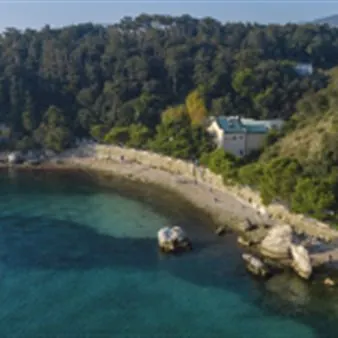

da sab 14 nov a dom 15 nov
Compleanno dell'AMP Miramare - Festa in BioMa!
Un Biodiversitario Marino agghindato a festa e aperto gratuitamente per l'intero weekend ospiterà due eventi che avranno per protagonisti l'arte, i libri, il mare e il paesaggio carsico. SABATO 14 NOVEMBRE Dalla spiaggia al BioMa: viaggio tra i pesci di Alberto Rocca Da sabato…
 Indicazioni
Indicazioni
- Costi e prenotazioni
- Costo non indicato · Prenotazione non indicata
- Programma
- Programma da verificare. Apri la fonte ufficiale per orari e possibili aggiornamenti.
- In caso di maltempo
- Nessuna indicazione specifica pubblicata.
- Note
- Acquisito automaticamente dalla fonte.
L’EVENTO
Descrizione completa
Un Biodiversitario Marino agghindato a festa e aperto gratuitamente per l'intero weekend ospiterà due eventi che avranno per protagonisti l'arte, i libri, il mare e il paesaggio carsico.
SABATO 14 NOVEMBRE
Dalla spiaggia al BioMa: viaggio tra i pesci di Alberto Rocca
Da sabato 14 il BioMa ospiterà l'esposizione di alcune opere di Alberto Rocca, artista triestino capace di dare vita a tutto ciò che incontra sulla spiaggia, soprattutto pezzi di legno ma anche scarti di metallo e plastica restituiti dal mare, assemblandoli in pesci, uccelli e in veri e propri microcosmi marini. Alberto, con le sue opere, racconta delle storie meravigliose e sabato a Miramare, tra una passeggiata in spiaggia per capire da dove trae la sua ispirazione e una chiacchierata davanti alle sue creazioni, le scopriremo insieme a lui.
Presto vi daremo tutti i dettagli: tenetevi aggiornati tramite i nostri social o sul sito www.ampmiramare.it
DOMENICA 15 NOVEMBRE
Avventure in landa: laboratorio con Dunja Jogan
Dalle 10.30 alle 12 di domenica la Tana del Polpo del BioMa ospiterà la presentazione della nuova storia "Avventure in landa" scritta dallo staff WWF e illustrata da Dunja Jogan, una fiaba per bambini sulla landa carsica che nasce per essere letta e interpretata con il teatro kamishibai. Dopo aver ascoltato la storia di Petra e delle sue avventure i bambini verranno coinvolti da Dunja in un laboratorio creativo in cui potranno trasformarsi in uno degli animali che popolano la landa carsica: seguendo le tracce della protagonista, costruiranno il proprio personale travestimento, scegliendo forme, colori e dettagli ispirati alla natura e ai suoi colori. Saranno inoltre proposte le consuete letture a cura dei lettori volontari di Nati per Leggere, che vista l'occasione della Festa di San Martino, saranno bilingui italiano-sloveno e inserite nel progetto nazionale Mamma Lingua.
L'appuntamento è rivolto alle famiglie con bambini e bambine dai 3 ai 6 anni.
La partecipazione è gratuita grazie al contributo della Regione FVG. Prenotazione obbligatoria con messaggio al numero 349 3256747 entro venerdì 13/11. Attendere conferma scritta.
IL PROGRAMMA
Programma e orari
Appuntamenti raccolti dalle fonti elencate. Dove manca un orario, non è ancora disponibile in questa scheda.
Programma pubblicato
- Dal 2026-11-14 al 2026-11-15
INFORMAZIONI UTILI
Prima di partire
- Controllare la fonte prima di partire.
ORGANIZZAZIONE